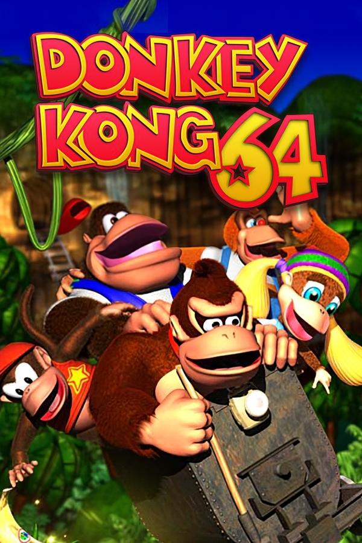

|  | |
| Playtime | Not Played |
| Last Activity | Never |
| Added | 4/29/2025 4:52:34 |
| Modified | 4/29/2025 23:42:00 |
| Completion Status | Not Played |
| Library | Playnite |
| Source | |
| Platform | Nintendo 64 |
| Release Date | 11/22/1999 |
| Community Score | |
| Critic Score | 90 |
| User Score | |
| Genre | Action-adventure Platform |
| Developer | Rare |
| Publisher | Nintendo |
| Feature | Multiplayer Single Player |
| Links | Wikipedia Official website Donkey Kong 64 at the Super Mario Wiki |
| Tag | [People] artist: Mark Stevenson [People] composer: Grant Kirkhope [People] director: George Andreas [People] producer: Shigeru Miyamoto [People] programmer: Chris Sutherland |
Donkey Kong 64 is a 1999 platform game developed by Rare and published by Nintendo for the Nintendo 64. It is the first Donkey Kong game to feature 3D gameplay. As the gorilla Donkey Kong, the player explores themed levels to collect items and rescue his kidnapped family members from King K. Rool who seeks to destroy DK Isles. The player completes minigames and puzzles as five playable Kong characters—each with their own special abilities—to receive bananas and other collectibles. In multiplayer modes, up to four players can compete in deathmatch and last man standing games.
Rare began working on Donkey Kong 64 in 1997, following the completion of Donkey Kong Country 3 (1996). It was conceived as a 2.5D platformer similar to Country before becoming a more open-ended game using the engine from Rare's Banjo-Kazooie (1998). A 16-person team with many recruits from the Banjo group finished it in 1999. It was published by Nintendo in North America in November and worldwide in December. Donkey Kong 64 was the first of two games to require the Nintendo 64 Expansion Pak, an accessory that added memory resources. The US$22 million marketing campaign included advertisements, sweepstakes, and a national tour.
Donkey Kong 64 received acclaim and was Nintendo's top seller during the 1999 holiday season; it ultimately sold 5.27 million copies worldwide. It won the 1999 E3 Game Critics award for Best Platform Game and multiple awards and nominations from magazines. Reviewers praised the exceptional size and length, but criticized its camera controls and emphasis on item collection and backtracking. Some cited its gameplay and visual similarities to Banjo-Kazooie as a detriment. Critics said Donkey Kong 64 did not match the revolutionary impact of Donkey Kong Country but was still among the Nintendo 64's best 3D platform games.
Donkey Kong 64 was Rare's final Donkey Kong game prior to its acquisition by Microsoft in 2002 and the last major Donkey Kong game until Jungle Beat (2004). It was rereleased on Nintendo's Wii U Virtual Console in 2015. Retrospective reviews of Donkey Kong 64 were mixed; critics considered it emblematic of the tedium in Rare's "collectathon" adventure platformers. The "DK Rap", a song featured in the introduction, garnered infamy as one of the worst songs in a video game.
Donkey Kong 64 is a 3D platforming action-adventure game in which the player, as Donkey Kong and his friends, explores an island and collects items to progress through minigames and puzzles. The game follows a traditional storyline for the series: King K. Rool and his reptilian Kremlings invade the idyllic DK Isle and kidnap Donkey Kong's friends, planning to power up their Blast-O-Matic weapon and destroy the island. After a tutorial, the player embarks as Donkey Kong to rescue the others from their kidnappers and stop K. Rool's plan. While exploring the in-game world and completing puzzle minigames, the player collects two types of bananas: colored bananas, which are color-coded differently for each Kong character, award the player with banana medals and can be traded for access to each world's boss fight; and golden bananas, a certain number of which are required to unlock each new in-game world.
Most of the puzzles are simple and involve rearranging items, manipulating switches and tiles, or matching items as in the game Concentration. Minigames include races, minecart rides, and barrels that shoot the characters as projectiles. There are five such golden banana-rewarding objectives for each of five playable characters across seven themed worlds—200 goals in total, in addition to a connecting overworld. The worlds' themes include underwater, forest, jungle, and industry. Unlike prior Donkey Kong games, the objectives can be completed in any order. The player can fast travel between sections of the level with designated warp pads and can swap between characters in designated swap barrels. The player collects banana coins, which can be spent to unlock new weapons and abilities, and other collectibles such as weapon ammunition and blueprint puzzle pieces. As in other Rare games, the player often encounters an impasse such as an indestructible object or out-of-reach area, and must acquire a new ability with which to eventually backtrack and resolve it.
Donkey Kong's kidnapped friends become playable characters after being rescued. Each of the five characters begin with basic abilities and can purchase additional, unique abilities from Cranky Kong as the game progresses, which are necessary to solve certain puzzles. For example, Donkey Kong can operate levers, Chunky Kong can lift rocks, Tiny Kong can crawl through holes, Diddy Kong can fly, and Lanky Kong can float. The characters each use unique projectiles and musical instruments. For example, some doors can be opened only with Donkey Kong's coconut projectiles and others can be opened only with Diddy Kong's guitar. There are more special abilities than face buttons on the controller, so button combinations are needed to trigger some abilities. Combinations also trigger special modes, including alternative camera angles, a sniper mode, and a snapshot mode which unlocks more in-game secrets. Playable versions of the original Donkey Kong (1981) and Jetpac (1983) are hidden within the game, and playing through them is required to finish the story. The player-character can also transform into animals, such as Rambi the Rhino and Enguarde the Swordfish, who recur from earlier series games. Optional hardware support includes a widescreen mode and Rumble Pak compatibility.
A separate multiplayer mode has six minigames for two to four players. Monkey Smash is an open arena, deathmatch-style minigame in which up to four players find ammo and use their respective projectile weapons from the single-player game to damage other players before losing all their own lives. Battle Arena is a king-of-the-hill minigame in which players use weapons and explosives to knock each other off the edge of a platform. Each mode has several sub-types in which players can compete based on time or score.
The British studio Rare, which created the successful Donkey Kong Country games for the Super Nintendo Entertainment System in the mid-1990s, developed Donkey Kong 64, with Gregg Mayles leading the effort. Development began in 1997, shortly after the completion of Donkey Kong Country 3: Dixie Kong's Double Trouble! (1996). It was originally reported as an intended release on the Nintendo 64's 64DD add-on, but transitioned to cartridge while the 64DD was delayed and eventually canceled. Rare artist Carl Tilley disputed the possibility of a 64DD release, recalling to Did You Know Gaming? that "Rare [management] wouldn't have wanted to release on the DD. Hardware sales dictated where best to sell the game." Time Extension argued that early reports of a 64DD release were "a mistake, a mistranslation, or simply talks between upper management." Grant Kirkhope stated that Project Dream was the 64DD title being developed by Rare at the time, not Donkey Kong 64. A team of 16 people worked on the game across three years, and an additional eight members assisted in its later stages. George Andreas served as the project's director.
Rare conceived Donkey Kong 64 as a linear, 2.5D platform game similar to the Donkey Kong Country games. The Nintendo 64 was still new, and at the time Rare did not have a common game engine. The linear version was developed for around 18 months before it was eliminated in favor of a more open-ended approach similar to Rare's 1998 game Banjo-Kazooie (1998). Many developers transitioned from the Banjo team, and the final version was built atop the Banjo game engine.
The character models were designed and animated from scratch. Rare was unable to reuse the models from the Donkey Kong Country series, where they had been pre-rendered and modeled with NURBs using PowerAnimator; Donkey Kong 64's real-time 3D graphics could only use polygons, so the team used a new tool, Gamegen. The pre-rendered models were used as reference for the polygon models and textures, such as for the interior of the Kongs' mouths. Though the real-time graphics prevented Rare from reproducing the level of detail seen in the Donkey Kong Country series, they allowed for more expressive characters. Rendering satisfactory models proved challenging; lead artist Mark Stevenson noted that "[b]eing able to see this character from any angle, you'd make an animation, put it in the game, and you'd think it looked good side-on, but awful from every other angle!"
The strong emphasis on collectibles was a design choice made at the request of Rare co-founder Tim Stamper to distinguish Donkey Kong 64 from Banjo-Kazooie. According to director George Andreas, "I'd always go back to him and say 'Here's some' and he'd go 'No, more things'". Retrospectively, Andreas commented that he should have reined himself in; particularly, he would have liked to unify the color-coded banana system. Rare attempted to differentiate Donkey Kong 64 from Banjo-Kazooie through its variety of playable characters, cinematic set-pieces, and bombastic boss battles. According to Andreas, Donkey Kong creator Shigeru Miyamoto was appalled when he saw Donkey Kong shoot a realistic shotgun used as a placeholder during a pre-release demonstration, and quickly sketched the coconut gun used in the final game.
A removed feature, "Stop 'N' Swop", allowed data to be transferred from Banjo-Kazooie to Donkey Kong 64 to unlock in-game bonuses. During development, Rare discovered the Nintendo 64 retained flash memory for several seconds after a cartridge's removal. They implemented a hot swapping feature whereby removing the Donkey Kong 64 cartridge and quickly inserting the Banjo-Kazooie cartridge, while the former's memory was still in the console, would unlock bonus content. Nintendo requested Stop 'N' Swop's removal when Rare submitted Donkey Kong 64 for approval. Nintendo was concerned the Nintendo 64 would not retain RDRAM long enough for the feature to work and that it could potentially damage consoles. Specifically, Nintendo 64 models produced after Banjo-Kazooie's release reduced the amount of time the console retained flash memory, making Stop 'N' Swop nearly impossible to activate as intended.
Donkey Kong 64 was the first of two games to require the Nintendo 64's Expansion Pak, a console RAM upgrade bundled with the game. The Expansion Pak was previously used to power optional higher-resolution graphics, but in the case of Donkey Kong 64, it was marketed as improving the frame rate and rendering of objects at a distance. Chris Marlow, who was working on Conker's Bad Fur Day (2001) at the time, claimed that Rare could not resolve a bug that occurred without the Expansion Pak and thus they were forced, at great expense, to bundle the game with the memory upgrade. However, Stevenson called Marlow's story a "myth" and said that the decision to use the Expansion Pak was made early. Though such a bug did exist toward the end of development, according to Stevenson, the Expansion Pak was not the solution for the problem and it was not introduced for that reason. According to Stevenson, the Expansion Pak was used to power the dynamic lighting system. Nintendo stated that the choice to bundle, rather than selling the accessory separately, would avoid consumer confusion.
Grant Kirkhope composed the soundtrack, which Nintendo Life described as closer in spirit to Banjo-Kazooie than to David Wise's Donkey Kong Country soundtracks. However, Kirkhope commented that he tried to retain the darker, atmospheric tone that Wise brought to Donkey Kong Country, and included a remix of Wise's "Jungle Japes". Donkey Kong Country 3 composer Eveline Fischer was originally assigned to Donkey Kong 64; Kirkhope became involved after he was asked for assistance, and he provided Donkey Kong's voice.
The "DK Rap", which introduces the Kong character abilities, was conceived and written by Andreas, scored and recorded by Kirkhope, and performed by Andreas and Chris Sutherland. It was intended to be a lighthearted joke, although critics interpreted it as a serious songwriting attempt. Nintendo of America ran a "DK Rap" contest in which fans record their own version of the rap to win prizes including a trip to its headquarters.
Rare announced Donkey Kong 64 with a single screenshot on its website and coverage in the January 1999 issue of Nintendo Power. Electronic Gaming Monthly wrote that it was playable by the 1997 Electronic Entertainment Expo, though IGN said that it debuted at the 1999 event. It was also demonstrated at Nintendo's 1999 trade show Spaceworld. Donkey Kong 64 was expected to be a bestseller, as the console's "crowning achievement" in graphics and sound.
Donkey Kong 64's sizable US$22 million marketing campaign doubled the typical budget for a major Nintendo release. The campaign included a 60-second commercial played at over 10,000 movie theaters during the holiday season, and additional advertisements via billboards, print, and radio. A promotional "The Beast Is Back" tour brought a truck outfitted with Nintendo games across the United States, and a separate sweepstakes between the series and Dr Pepper was advertised in supermarkets. Nintendo projected sales of 2.5 million copies within one year, and later that year increased the number to 4 million copies (1.5 million more than for The Legend of Zelda: Ocarina of Time), including 1 million of the translucent green Nintendo 64 bundles. Polled retailers expected Donkey Kong 64 to be the top console game sold during the 1999 holiday season. It had little holiday season competition from Nintendo, as Nintendo had moved releases including Mario Party 2, Perfect Dark, and Pokémon Stadium into the next year.
Rare and Nintendo released Donkey Kong 64 in North America in November 1999, and a worldwide release followed the next month. Nintendo offered a special bundle of the game and console, including a banana yellow-colored game cartridge, its required Expansion Pak, and a transparent green "Jolly Rancher-style" Nintendo 64 console.
In April 2015, Donkey Kong 64 was digitally rereleased as one of the first Nintendo 64 games added to Nintendo's Wii U Virtual Console catalog. This was the game's first rerelease, as it had not appeared on the Wii Virtual Console. Why it was never released on the Wii Virtual Console is unknown, although Nintendo World Report speculated that it may have been related to the fact that it contains both the original arcade Donkey Kong (which was already available on the Virtual Console) and Jetpac (which Nintendo does not hold the rights to) as playable bonuses.
Donkey Kong 64 received critical acclaim—"universal acclaim", according to video game review aggregator Metacritic. It became the Nintendo 64's top seller during the 1999 holiday season and Nintendo's chief defense against competitor Sega's introduction of its Dreamcast console. As a bestseller, Donkey Kong 64 joined Nintendo's "Player's Choice" game selection, where high sales continued through the next holiday season. Cumulative worldwide sales were 5.27 million, including more than 2.3 million copies in North America by 2004. It won the 1999 E3 Game Critics award for Best Platform Game, and several annual awards from Nintendo Power, including best overall game of 1999. Donkey Kong 64 received nominations for "Game of the Year" and "Console Game of the Year" by the Academy of Interactive Arts & Sciences during the 3rd Annual Interactive Achievement Awards (now known as the D.I.C.E. Awards). GamePro named it an "Editor's Choice". IGN described Donkey Kong 64 as the biggest and most ambitious Nintendo 64 game as of its release, but very similar to Banjo-Kazooie in its platforming and puzzle design. Similarities between the two games was a common refrain. Overall, reviewers were more impressed by its visuals than by its other elements, such as gameplay.
Reviewers criticized the emphasis on collecting items and backtracking—"an interactive egg hunt". This had become a trend in Rare's games, and Donkey Kong 64 followed the "predictable formula" of making players collect multiple sets of items and in full for a special ending. Next Generation noted Rare's propensity for backtracking. GameSpot more diplomatically assumed that players who liked collecting items would be titillated by its replay value, and those who did not would be frustrated by its chores. The Cincinnati Enquirer applauded the minigames as a "welcome diversion [which] add to the fun of an already massive adventure", and which are so good they would have worked as their own released games on previous-generation consoles. EGM said the puzzles and minigames are fun the first time through, but they quickly become worn when replayed with increasingly tighter time restrictions. GameSpot, however, considered parts of Donkey Kong 64's gameplay "cerebral", requiring the consideration of several simultaneous tasks to solve later puzzles. Already familiar with concepts borrowed from Super Mario 64, Ocarina of Time, and Banjo-Kazooie, critics considered the player's tasks less innovative or interesting to decipher. In retrospective reviews, Nintendo Life described the chore of collecting objects "excessive" and repetitive. They suggested that backtracking, for instance, could be reduced by letting the player switch between characters at any time.
The size and length were frequently noted. With an estimated 30 hours in basic gameplay, IGN called it Rare's War and Peace. GameFan wrote that "big" is an understatement, and "the adventure found within is mastodonic". Writers from AllGame and EGM became frequently lost or distracted in its world. The ingenuity of the boss battles, particularly the final battle against K. Rool, was highlighted, although the story's ending disappointed EGM. Reviewers found little entertainment in the multiplayer mode but praised the gameplay variety between the five characters. The controls also frustrated reviewers, between slow movement speed and camera angle issues. For example, characters who become unresponsive during their attack animations are vulnerable to encroaching enemies. Edge wrote that the lack of camera improvements over Banjo-Kazooie was inexcusable.
Even with the RAM expansion for graphics, Donkey Kong 64's visuals were only found marginally—if at all—better than that of its contemporary games, such as the previous year's Banjo-Kazooie. IGN avowed that Donkey Kong 64 was not as pretty as Banjo-Kazooie, especially in its water and backgrounds, though it still ranked among the console's prettiest games because the setting is barren and nondescript at first, and only later introduces lighting effects and richer textures. IGN hoped for more from Rare, praising the particle effects (such as in the desert wind), but considering its dynamic lighting overused. N64 Magazine said the enhanced effects were most often used for decoration, though they also played some role in puzzles based on illuminating paths. Graphical difficulties were reported even with the extra memory, such as frame rate slowdowns and distant features not appearing in any detail, though overall they commended the graphical flourishes. GameSpot also saw a lack of variety in the environment.
The characters were praised for their personalities, animations, and portrayal of Rare's signature humor. Several reviewers noted the personalities shown in character animations. IGN considered the characters less baffling than those of other Rare games, and sometimes funny. GameFan found that the addition of the three new playable characters to the series offered little personality that would be missed.
IGN said that the music was less clever than Banjo-Kazooie's, but Kirkhope's soundtrack still delivered a variety of moods and fit the setting. Aural clues in the surround sound and the quality of the underwater effects impressed GameSpot. Reviewers criticized the opening "DK Rap" as "embarrassing" and among the worst video game music. GamePro said it was humorous but lowbrow. Eight years later, Nintendo Life said the song was "loved by some, loathed by others", similar to the game itself.
The consensus was that Donkey Kong 64 lacked the revolutionary potential of Donkey Kong Country but was of a sufficient high quality to sell well during the holiday season. The Cincinnati Enquirer described its platform style as coupled with many others, such as Super Mario 64, Banjo-Kazooie, and Jet Force Gemini (1999): "Replace the story line, the graphics and a couple of gameplay elements and you basically have the same game". Nonetheless, he said "its mastering of elements that have been done to death may be just the spark needed" to evolve the genre in games released in later years, celebrating its gameplay as addictive and some of the best on the Nintendo 64. Though hyped fans would be disappointed, IGN said that Donkey Kong 64 remains an excellent and expansive platformer with an overwhelming amount of things to do. GameFan, on the other hand, was most disappointed by how it "truly offers nothing new" and compared its monotony and repetition with the 1999 film Eyes Wide Shut: "a big bloated project with not enough brilliant moments to justify the numbness ... [of] sitting through the whole thing", it "fails to live up to the Rare name". Donkey Kong 64's 3D platforming was commonplace by the time of its release and, according to GameSpot, would have fared better as a Nintendo 64 launch game. With its competition considered, Daily Radar wrote that Donkey Kong 64 was simply the best 3D platform game on the console. Edge qualified this thought: Donkey Kong 64 was the closest any third-party developer had come to outdoing Nintendo's mastery of game structure and was "a fine effort ... in its own right", but its gameplay was derivative and unimaginative compared to the freedom and flexibility of Nintendo's Super Mario 64.
In a retrospective review, Nintendo Life found the Wii U controller an easy substitute for the Nintendo 64's controls.
Rare's 3D platformers became notorious for their emphasis on collecting items, and Kotaku remembered Donkey Kong 64 as "the worst offender" with hundreds of color-coded bananas. Other retrospective reviewers agreed. Electronic Gaming Monthly wrote: "As ... Super Mario 64 breathed life into the 3D platforming genre, Donkey Kong 64 sucked it all out" and solidified Rare's reputation for making "collect-a-thon" games. The indie developer behind A Hat in Time, a spiritual successor to Banjo-Kazooie, blamed Donkey Kong 64 for the "collect-a-thon platform adventurer" genre's decline in popularity. The game holds a Guinness World Record for most collectible items in a platform game.
Retro Gamer and Game Informer both remembered the reception as "mixed", in consideration of its similarities with Banjo-Kazooie and lack of genre-pushing changes. Though decently reviewed, this and Rare's subsequent Nintendo 64 releases did not meet the extolment of the company's preceding games, and lackluster sales led to a staff exodus that culminated with the company's acquisition by Microsoft in 2002. Donkey Kong 64 was resultingly Rare's final Donkey Kong game; the series did not receive another major installment until Donkey Kong Jungle Beat (2004) five years later. Electronic Gaming Monthly noted at the game's launch, that the Nintendo 64 was approaching the end of its lifecycle, as gamers turned their sights to the Sega Dreamcast and Sony PlayStation 2. IGN later named Donkey Kong 64 as worthy of a remake for the Nintendo 3DS handheld console. In 2009, Official Nintendo Magazine placed the game 89th in a list of the best Nintendo games, calling it "a forgotten classic".
The "DK Rap" is still remembered for its negative reception, but an upswing in popularity happened more than a decade after release as an Internet meme. Sutherland believes this happened because those who played the game as children had realized the song was meant to be taken as a joke, not a serious songwriting attempt. Similarly, Kirkhope commented that "it's a bit like ABBA, the way they've kind of come back into fashion over the years". Renditions of the "DK Rap" appeared in Super Smash Bros. Melee (2001) and Donkey Konga (2003). In 2017, Kirkhope composed a similar rap for Yooka-Laylee, a platform game made in homage to Rare's works. The rap plays during Donkey Kong's introduction in The Super Mario Bros. Movie (2023), included at the behest of Donkey Kong's voice actor Seth Rogen. Kirkhope was flattered by the song's inclusion but disappointed he did not receive credit; the film simply credits it as originating from Donkey Kong 64.